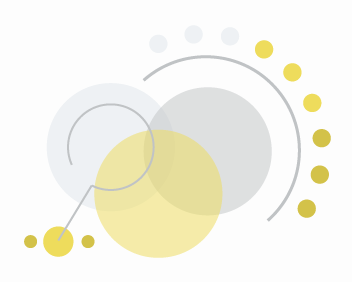
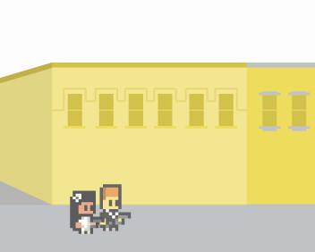

—
A creative and informative site about culinary herbs with visualizations.
Tools used: d3, js/jquery, html/css, php, wordpress, illustrator, photoshop
take a look
Decision Engine
—
A web app providing analytical information of online consumer chatter surrounding pharmaceutical products. Tools used: python, mysql, django, html/css/js/jquerytake a look

Consumer Complaints
—
A d3 interactive visualization of credit card consumer complaints for the top four US banks from 2008-2011. Tools used: d3, html, css, mysqltake a look

Wedding
—
Online wedding invitation site for my own wedding on October 5th, 2013. Tools used: html/css/js/jquery, mysql, php, illustrator, photoshoptake a look
NYPD Stop and Frisk
—
A d3 interactive visualization of NYPD Stop and Frisk Data from 2003-2011. Tools used: d3, leaflet.js, html, css, mysqltake a look
Jazz Drum Machine
—
Designed the interface for Ben Lacker's Jazz Drum Machine which output drum beats. Tools used: html/css, js/jquery, illustratortake a look